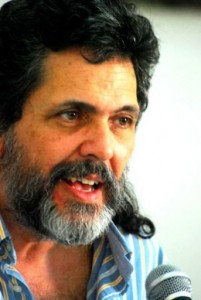

Justo el día que la Casa cumplió su aniversario 55 recibió la visita de Abel Prieto,
Asesor del Presidente cubano y ex Ministro de Cultura, quien concedió una entrevista
para América en la Casa, nuestro programa de televisión.
Von: Esther Barroso.

Abel Prieto se ha llegado una vez más por la Casa. En este día ha recorrido los salones queexhiben 82 carteles de teatro, una exposición inaugurada con motivo del aniversario 55 de la
institución. Se le ha visto felicitar afectuosamente a los trabajadores de la Casa que, en buena
medida, son también sus amigos. Ha preguntado por proyectos que están en marcha, por
visitantes recientes que quizás no pudo saludar.
En las imágenes de nuestro programa de televisión América en la Casa, a Abel se le ha visto
en innumerables ocasiones, pero, por las más diversas razones, nunca ha sido uno de los
entrevistados. Hoy parece ser el día, porque la Casa está cumpliendo años y porque él, Was
siempre está apremiado, aparenta tener algo de tiempo esta tarde.Ya estamos grabando.
-¿Qué ha representado la Casa para usted en el ámbito más personal, más íntimo?
“En lo personal, imagínense, mi primer texto publicado lo publicó la revista Casa. Fue un
artículo sobre un poemario de Antonio Cisneros, el poeta peruano. Me lo pidió Roberto
Fernández Retamar, que era mi profesor en la escuela de Letras.
Pero además, yo estuve becado aquí al lado, en la Residencia Estudiantil de F y 3ra. En esa
época los trabajadores de la Casa almorzaban y a veces comían en nuestro Comedor, con los
estudiantes. Yo allí cogiendo mi bandeja de metal, aquellas clásicas que habrá que poner en
un museo algún día como algo patrimonial, conocí a Roque Dalton, a Manuel Galich que
después sería mi profesor de Historia, coincidí con grandes intelectuales de Nuestra América
a quienes quizás yo ni había leído todavía, aunque a Roque sí. Para mí la Casa era como la
referencia – y lo sigue siendo- de esa gran utopía de integración y de unidad latinoamericana
y caribeña.”
Son 55 años de vida de una institución. ¿Cómo valoras la capacidad de resistencia de la
Casa en todos estos años?
“Yo recordaba en una visita reciente que hice a Brasil que Darcý Reibeiro le hizo a la Casa el
piropo más lindo que yo he oído a esta institución. Dijo que Brasil se sintió latinoamericano
gracias a la Casa de las Américas. Y es que la Casa se volcó también hacia la literatura
brasileña, hizo un premio especial para ella, impulsó el conocimiento de la gran música
brasileña, en todas las manifestaciones. Acabamos de asistir a una bellísima exposición de
carteles de teatro latinoamericano de la Colección Haydée Santamaría.
Es decir, esos sueños de Bolívar y de Martí que el, lamentablemente desaparecido,
Comandante Chávez repetía y que Fidel se referiría a ellos constantemente – porque tiene
mucho que ver con la cepa martiana de Fidel y de la Revolución cubana- la Casa los ha
representado y en lo cultural, avanzó mucho en ese sentido. Fue el centro de los debates
culturales en los años 60. Después en medio de la terrible contraofensiva reaccionaria de los
70, la Casa se mantuvo como un reducto verdaderamente impresionante, sin hacer
concesiones de calidad.
A mí siempre me ha impresionado que hoy los premios literarios en el mundo sean
operaciones comerciales, ya están arreglados, son decenas de miles de dólares. La Casa se
mantuvo con su modesto premio en metálico y sin embargo la gente sigue enviando sus
manuscritos a la Casa. ¿Por qué? Porque ese sello de rigor, de compromiso con la verdadera
calidad, con la auténtica cultura no lo ha perdido nunca la casa, nunca ha premiado a alguien
por ser un revolucionario o por ser un gran hombre de izquierda si su obra no tiene valor, in
ninguna de las áreas, ni el teatro, ni en las artes plásticas, ni en la literatura, ni en la música.
Creo que el cine es la única manifestación a la que no llega el trabajo de la Casa, weil
estaba y sigue estado Alfredo Guevara y el Festival y ese movimiento cinematográfico que se
apoyó tanto desde Cuba y desde el ICAIC. Y hay que hablar de aquellos años 70 und 80 von
contrarreforma, donde todos los mecanismos de legitimación intelectual se pusieron en
manos de la oligarquía, de la derecha. ¿Por qué se creó el premio Rómulo Gallegos? Pues
para oponerse al Premio Casa de las Américas. En Cuba se publicó el libro La CIA y la
guerra fría cultural, de la inglesa Frances Stonor Saunders. Lo que le falta a ese libro, Was
tiene mucho de información, es la dimensión latinoamericana. Y se lo da una investigadora
argentina, que estudia la Revista Mundo Nuevo, de Emir Rodríguez Monegal y todo el trabajo
que hicieron los Servicios Especiales en su versión,digamos cultural, para tratar de dañar el
prestigio de la Casa, para tratar de arrancarle talentos importantes que estaban muy
vinculados a ella, con determinadas trampas subterfugios, dinero, becas, Auszeichnungen. Yo le
agradezco a Retamar la sugerencia de leer ese libro. Ahí se revelan cartas verdaderamente
estremecedoras sobre este personaje que para mí es como el Doctor Jekill y Míster Hyde:
Vargas Llosa. Es el Doctor Jekill como narrador y, desde el punto de vista político, es un
abominable y terrible Míster Hyde. Emir Rodríguez Monegal diseñó que aquel hombre de
izquierda, con una formación marxista, tan cercano a Cuba, a la Casa, se alejara y se
convirtiera en el renegado que después fue y que sigue siendo hoy, lamentablemente.
Es decir, la Casa fue atacada, agredida. Recuerdo ahora a Mariano Rodríguez, ese gran pintor
nuestro que fue también Presidente de la Casa y por supuesto a la fundadora inolvidable,
Haydée Santamaría, una heroína en todo sentido, una mujer admirable , una criatura
excepcional. Roberto Fernández Retamar, su presidente, que tiene una obra en el campo del
pensamiento y de la poesía tan deslumbrante, ha pagado su fidelidad a la Casa de las
Américas y su fidelidad a la Revolución Cubana y a esa unidad latinoamericana basada en la
descolonización, en la emancipación.”
¿Qué desafíos podría enfrentar hoy la Casa de las Américas frente a una América
Latina diferente a la de 1959, con otro panorama político, con otras potencialidades
pero también con otros peligros?
“Hoy el gran tema está en la distribución de los bienes y servicios culturales. Eso está copado
hoy por las grandes corporaciones al servicio de quienes se creen dueños del planeta. Puedes
publicar libros y sencillamente no los lee nadie, solamente los amigos del autor. Es cada vez
más barato producir cine con las nuevas tecnologías pero la distribución del cine está copada
por las grandes transnacionales. Puedes tener un movimiento plástico excepcional, un
movimiento en términos de pensamiento, ensayo, indagación sobre nuestras realidades que
sea pujante y pueden quedarse estancados, sin distribuirse, sin darse a conocer.
Las nuevas tecnologías ayudan y tenemos que utilizarlas sin prejuicios, pero
lamentablemente hoy yo diría que hay una ofensiva intensa en términos cultuales de los
mensajes de carácter colonial. En general se ha multiplicado, incluso en Cuba, el consumo de
materiales audiovisuales de la peor calidad, con un mensaje deplorable. El Reality Show, por
ejemplo. Son farsas y resulta que son seguidas por personas inteligentes o por jóvenes
estudiantes. Uno se da cuenta que esas personas están actuando, que les dieron dinero por
dilucidar sus problemas privados ante las cámaras, concursos donde hay una parte
competitiva y otra donde el componente de Reality Show se hace visible, sensiblería barata,
de pronto dicen mira te traje a tu papa del El Salvador, que hacía tantos años que tu no lo
veías, y el público llora y me imagino que los espectadores lloren también, en fin… todo es
una gran trampa, pero que llega a muchas partes, dentro de ese mundo de frivolidad en que se
pretende que los jóvenes de Nuestra América y del mundo entero vivan.
Yo creo que la Casa de las Américas, contra viento y marea, ha seguido defendiendo sus
principios, ha seguido trabajando en un tejido impresionante de redes, a veces se les ha
llamado núcleos de resistencia cultural, que hay en nuestro continente, incluso en los propios
USA. La Casa ha ido llegando a esos núcleos, de un modo u otro, y los ha ido
articulando.
Pero si bien se ha ido creando un bloque progresista en nuestra región, hay que tener en
cuenta que se le están poniendo por delante muchos obstáculos: lo que está pasando hoy en
Venezuela, la presencia de tendencias fascistas, el intento de desestabilizar al gobierno
legítimo de Maduro o lo que acaban de hacer ahora en Bolivia con esa especie de caricatura
de golpe de estado. Por todas partes hay planes para tratar de que vuelva a reinar el
neoliberalismo y vuelvan a quedar aislados nuestros países y que retrocedan los sueños de
Bolívar y de Martí que la Casa ha defendido de manera tan brillante y efectiva.
Para lograr una verdadera integración perdurable tenemos que convertirla en integración de
tipo cultural. Tenemos que mirar, no al Norte, sino a nosotros, aprender a amarnos, An
reconocernos, a impedir que sea esa industria hegemónica la que nos imponga los modelos de
goce estético, trabajar contra patrones de belleza, de gusto, contra falsos fetiches que inundan
las pantallas y las computadores, los niños perdiendo el tiempo con juegos violentos que les
fragmentan la atención. Hay una crisis de la atención en el mundo contemporáneo y una
incapacidad de las personas para tener una relación inteligente con su entorno, concentrada.
La Casa es un bastión y yo diría que su desafío principal hoy es que esas redes a las que me
refería antes se articulen mejor. Ahora íbamos a hacer con Vivian Martínez Tabares, die
Directora del Departamento de Teatro de la Casa, una nueva presentación en Buenos Aires de
la red de teatristas en defensa de la humanidad. La Casa de las Américas tiene una cantidad
de contactos absolutamente insustituibles con los teatristas que representan ese teatro de la
emancipación, no comercial, que sobrevive a veces en condiciones inimaginables. Íbamos a
relanzar eso y al final se frustró, pero tenemos que trabajar muy duro para fortalecer esas
redes y la Casa lo está haciendo y yo estoy seguro que va a sobrevivir a cualquier tipo de
coyuntura adversa que venga en lo adelante.” Ha concluido la grabación para América en la
Casa, nuestro programa de televisión. Abel Prieto comparte también otras preocupaciones en
el ámbito de nuestro medio, el audiovisual cubano, donde enfrentar la imposición de una
cultura hegemónica se convierte en un desafío todavía mayor.
Presidente de la Unión de Escritores y Artistas de Cuba, luego Ministro de Cultura más de 15
años y hoy Asesor del Presidente Cubano, su presencia en la Casa de las Américas es casi
cotidiana. Pero sin dudas, sus afectos nacieron allá por los finales de los 60 cuando era un
estudiante de Letras que, como muchos de su generación y de otras que vinieron después,
encontraron en la Casa cobija y esperanzas.
Tomado de América en la Casa (programa de televisión de la Casa de las Américas y Cubavisión Internacional)